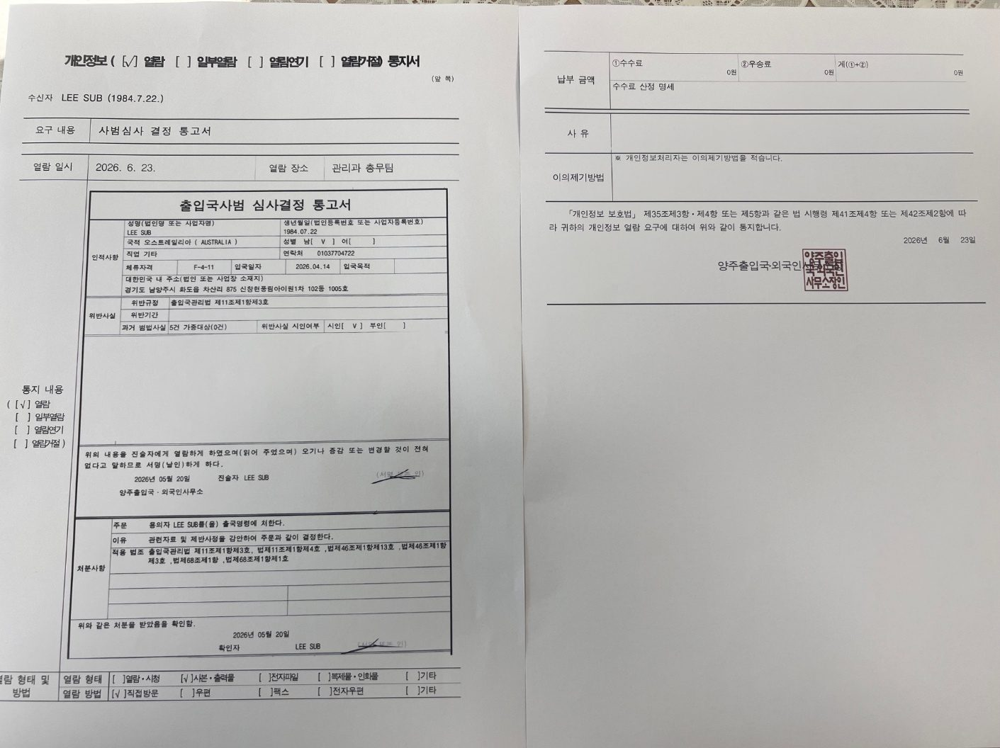

"I received a departure order — can I re-enter Korea?" Where a disposition has not yet been made, reducing its severity at the violation-review stage is most advantageous; where you have already left under a disposition, you can contest it through an objection and a revocation lawsuit, or apply to lift the entry ban by substantiating national-interest or humanitarian grounds. As all three methods are available only within fixed deadlines, you need to be mindful of when you respond.
A departure order carries an entry ban
Where a departure order or deportation is issued at a violation review, an entry ban restricting re-entry for a set period is imposed together with that disposition. As the disposition and the ban are separate measures, the entry ban remains in force even though the review has ended with your departure.
The period is set by the type of violation and the weight of the disposition — one, three, five, or ten years — and where the matter is a serious crime such as narcotics or a sexual offence, or concerns national security, a longer period applies. Where several grounds apply, the longest is applied, and where public funds were used to carry out a deportation, the period may be extended if that cost is not repaid.
More than the length, the point to note is that the time to contest the disposition or to lift the ban is fixed. The methods available differ according to when you begin your response.

The violation-review stage, before the disposition
As the entry ban is imposed as an incident of a departure order or deportation, the most advantageous time to contest the disposition or reduce its severity is before it is issued — at the violation-review stage.
At the review, the severity of the disposition is set by weighing not only the violation but your family ties in Korea, length of stay, degree of remorse, and established life here. Where favorable circumstances are substantiated with evidence at this stage, the outcome may be a departure order in place of deportation, or a lighter disposition, and the entry-ban period imposed changes accordingly. This is why responding before the disposition is fixed is more advantageous than seeking to undo it after you have left.
As statements made unprepared, attending alone, are recorded and become the basis of the disposition, preparing your response from the investigation and review stage governs even the later entry ban.

Two methods if you have already left
Where you have already left under a disposition, there are two methods to re-enter: an objection and revocation lawsuit contesting the disposition, and a lift of the entry ban that may be sought while the period remains.
Both methods have fixed deadlines, and where they are pursued without a prepared case, recognition is difficult. You need first to examine which method applies to your situation, and by what evidence its grounds can be supported.
Objection and revocation lawsuit
Where you contest a departure order or deportation, you may file an objection from the date you receive the disposition notice, and where the objection is not accepted, bring a revocation lawsuit in the administrative court. Each procedure has a fixed deadline, and where it passes, the disposition can no longer be contested.
To contest a disposition, the period and grounds of the entry ban imposed must be fixed in writing. The period is stated orally to the person when the disposition is made, but to rely on it as a ground in an objection or a complaint, it needs to be confirmed in writing. This confirmation follows a different procedure when done by the person and when done by a legal representative, and fixing the ban's content and contesting the legality of the disposition as a representative requires practical familiarity.

Lifting the entry ban
Separately from contesting the disposition, where the entry-ban period remains, you may apply to lift the ban where national-interest or humanitarian grounds are recognized.
Humanitarian grounds include the case where you have a Korean spouse or a minor child and so have a family base in Korea, or where you or a family member needs significant medical treatment. National-interest grounds consider economic contribution within Korea. Even where such a ground exists, however, a lift is not recognized as a matter of course; whether it is granted rests on a discretionary judgment. The ground alone is not enough, and the outcome differs according to how, and with what evidence, the ground is substantiated.
Being a discretionary judgment, an application does not necessarily result in a lift. Where an application is made without sufficient basis or a well-organized case, recognition is difficult, and applying again after a judgment has been made is harder than the first time. You need to examine, case by case, which grounds can be recognized and what evidence supports them.
What to confirm now
The method to take differs according to the stage you are at.
Where a departure order has not yet been issued, reducing the severity of the disposition at the review stage is most advantageous, so it is appropriate to respond before the disposition is issued and thereby also reduce the entry ban that follows. Where you have already left under a disposition, it is appropriate first to confirm that the deadlines for an objection and a revocation lawsuit have not passed, and at the same time to examine whether there are grounds on which to apply to lift the entry ban.
Frequently asked questions
This article is general legal information, not advice on an individual case. The response to a disposition and an entry ban varies with the facts and timing, so confirm the course for your situation through a consultation.